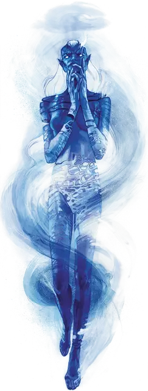

Туманный скиталец
Mist Hulk
Большой Элементаль, обычно хаотично-нейтральный

Класс Доспеха 15
Хиты 94 (9к10 + 45)
Скорость 0 футов, летая 40 футов (парит)
| мод | спас | ||
|---|---|---|---|
| СИЛ | 18 | +4 | +4 |
| ЛОВ | 21 | +5 | +5 |
| ТЕЛ | 20 | +5 | +8 |
| мод | спас | ||
|---|---|---|---|
| ИНТ | 11 | +0 | +0 |
| МДР | 13 | +1 | +4 |
| ХАР | 16 | +3 | +6 |
Навыки Восприятие +4, Скрытность +8
Сопротивление урону звук
Иммунитет к урону яд
Иммунитет к состояниям истощение, опутанность, отравление, паралич
Чувства пассивное Восприятие 14
Языки Ауран, Великаний
Опасность 6 (2300 опыта)
Бонус мастерства +3
Особенности
Воздушная форма. Туманный скиталец может входить в пространство враждебных существ и останавливаться там. Он может перемещаться сквозь пространство шириной в 1 дюйм без протаскивания.
Предсмертная вспышка. Когда скиталец умирает, он взрывается водяными волнами. Все существа в пределах 10 футов от скитальца должны преуспеть в спасброске Ловкости Сл 16. В случае провала существо получает 11 (2к10) дробящего урона и падает ничком. В случае успеха существо получает только половину урона.
Действия
Мультиатака. Туманный скиталец совершает две атаки Размашистым ударом.
Размашистый удар. . Рукопашная атака оружием: +8 к попаданию, досягаемость 10 футов, одна цель. Попадание: 16 (2к10 + 5) урона холодом.
Жуткий вопль (перезарядка 5-6). Туманный скиталец издает вопль, наполненный магической болью. Каждое существо в пределах 30 футов от него должно совершить спасбросок Мудрости Сл 14. Существо в чём пространстве находится туманный скиталец имеет помеху на данный спасбросок. В случае провала существо получает 14 (4к6) урона психической энергией и становится недееспособным на 1 минуту. Недееспособное существо может повторять спасбросок в конце каждого своего хода, оканчивая на себе действие эффекта в случае успеха.
Описание
Я скорблю по скитальцам, по всем им. Вид туманного скитальца, в особенности, наполняет меня меланхолией, от которой трудно избавиться.
- Дианкастра
Происходящие от древних облачных великанов, туманные скитальцы - Элементали, воплощающие смешанную элеметальную природу своих предков, состоящую из Воздуха и Воды. После бесчисленных веков изоляции — часто на одном из Элементальных планов или каком-нибудь скрытом демиплане - они сохраняют небольшой намек на физическую форму своих предков и еще меньше на культуру великанов.
Туманный скиталец напоминает двуногую фигуру, сделанную из тёмных дождевых облаков. Части его тела кажутся более твердыми, нежели другие, но эти части достаточно прозрачны, чтобы внутри были видны клубящиеся пары сущности скитальца. Из него постоянно исходят облака, как будто скиталец может полностью раствориться в любой момент. Когда он погибает, его туманная форма преобразуется в поток воды.
Настроение туманного скитальца всегда мрачное, и когда ему угрожают, он часто воет от невыносимого страдания. Всем, кто слышит этот вой, волшебным образом вспоминаются прошлые сожаления, реальные или воображаемые.